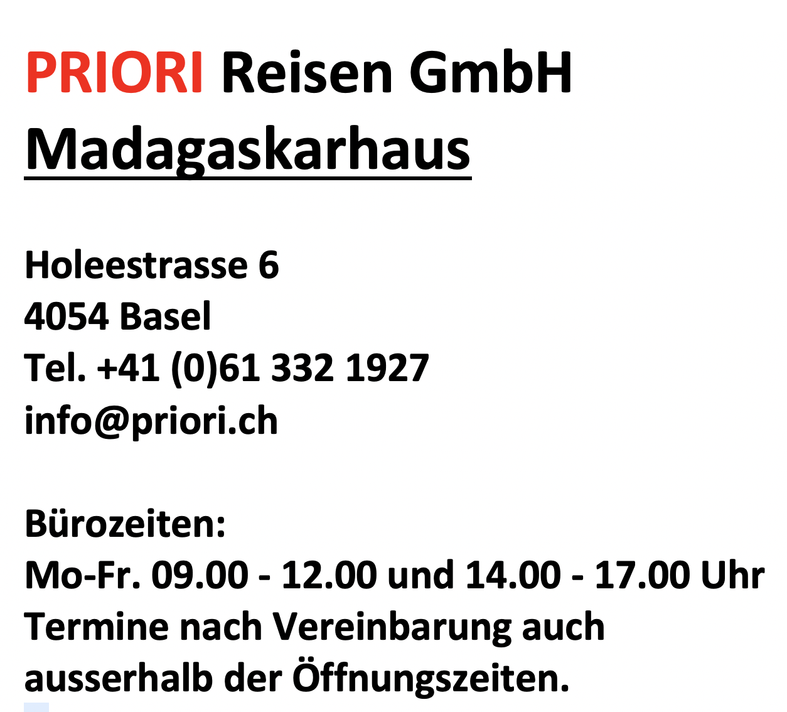
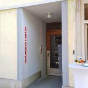
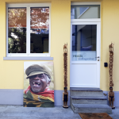
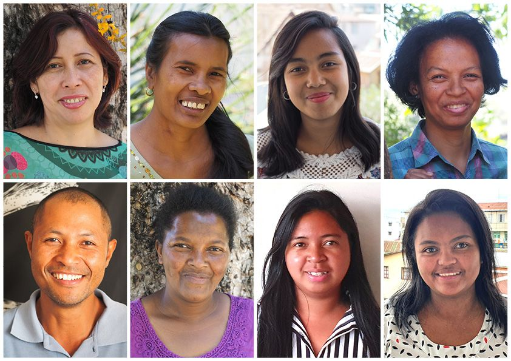

Kontakt
Wir im Madagaskarhaus sind Ihr direkter Kontakt und haben Zeit für Sie, bieten ausführliche Reiseberatung sowie umfassende Infos zu Madagaskar. Kommen Sie vorbei oder rufen Sie uns an!
ÖFFNUNGSZEITEN
Das Madagaskarhaus ist ‘immer’ offen. Es würde uns sehr freuen, wenn Sie hier vorbeikommen, denn es gibt viel zu Madagaskar zu sagen.
Natürlich ist uns eine Voranmeldung lieber, denn dann können wir uns wirklich Zeit für Sie reservieren. Das Madagaskarhaus in Basel ist das Kultur-, Info- sowie Reisezentrum für Madagaskar. Also geht es hier nicht immer nur um Reisepläne, sondern es kontaktieren uns auch Leute, die sich von Madagaskar angesprochen fühlen: sei es, um einen Sozialeinsatz zu machen oder gar, um auszuwandern; sei es, um spezifische Infos zu erhalten oder auch, um sich in irgendeiner Form zu engagieren. Des Weiteren natürlich auch, um Flüge sowie Reisen organisiert zu erhalten.
Alle Beratungen waren bis Corona immer kostenlos. Inzwischen müssen wir eine Beratungsgebühr verlangen.
Eine richtige Reiseberatung dauert mindestens zwei Stunden und kann schon mal das doppelte davon betragen. Sowas bietet im deutschsprachigen Raum niemand sonst, aber wir denken, wer hier alle Fragen beantwortet erhält sowie seine Reise gut informiert plant, wird in Madagaskar besser reisen sowie mehr erleben. Für uns ist ‘sehen – verstehen – erleben’ gekoppelt mit Sorgfalt und Achtsamkeit sowie mit einem bewussten Austausch auf Augenhöhe.

Unter der Mobilnummer +41 76 409 91 98 erreichen Sie Franz Stadelmann rund um die Uhr.
ANFAHRT
Das Madagaskarhaus ist mit ÖV leicht zu erreichen:
Bitte reisen Sie, wenn möglich, mit dem ÖV zum Madagaskarhaus.
Ab Basel SBB fahren Sie vier Stationen (ein Kurzstrecken-Ticket reicht!) mit dem Trämli Nr. 2 in Richtung «Binningen, Kronenplatz» bis Haltestelle «Zoo Dorenbach».

In Fahrtrichtung des Trams sehen Sie einen Verkehrskreisel und dahinter, auf der rechten Seite, eine Häuserzeile, mit einem Matratzengeschäft an der Ecke. Gehen Sie auf dieser Strassenseite in die Holeestrasse hinein bis zum Haus Nr. 6. Im Erdgeschoss dieses Hauses befindet sich das Geschäft «Nippes, Kladderadatsch & Co». Im Hauseingang von Holeestrasse Nr. 6 befinden sich links von der Haustür die Klingeln. Läuten Sie bei «PRIORI Reisen GmbH». Wir öffnen Ihnen die Tür und holen Sie ab.

Herzlich willkommen: tonga soa auf madagassisch.
TEAM MADAGASKARHAUS
Im Madagaskarhaus in Basel arbeiten:
Franz STADELMANN – Auskünfte über Madagaskar
– Gründer sowie Chef der PRIORI in Antananarivo (ursprüngliche Homepage: www.priori.ch), sowie des Madagaskarhauses in Basel und ebenso des ersten und einzigen Piratenmuseums von Madagaskar (www.piratenmuseum.ch)
– Er schrieb den Text zum Bildband Reisen durch Madagaskar, zum Bildband Madagaskar Tropenwunder im Indischen Ozean sowie zum Buch Reise durch die Komoren und Mayotte
– Zeitschriftenbericht über das Leben von Franz Stadelmann
Astrid DREIER
– Buchhaltung
– Administration
Fabienne MARTY
– Reiseberaterin
In der Ostschweiz steht Peter ELLIKER aus Teufen für Infos sowie Auskünfte zur Verfügung. Der pensionierte Lehrer kennt Madagaskar aus zahlreichen Aufenthalten.
Er ist erreichbar unter Telefon 071 333 10 57.
Wie alle MitarbeiterInnen der PRIORI-Reiseorganisation leitet auch er regelmässig eine Kleingruppe in Madagaskar.
Nicht zu vergessen ist, dass hinter dem Madagaskarhaus in Basel die PRIORI in Antananarivo steht: Präsenz sowie Kompetenz vor Ort. Seit 1994.
PRIORI = Swiss quality made in Madagascar

Unser Team-Madagaskar von PRIORI stellt sich vor. Eine Kollage von allen Mitarbeitern unseres Büros in Antananarivo, im Zentrum der Hauptstadt Madagaskars.
Kontakt vor Ort: Unser Büroteam in Antananarivo
freut sich auf eine Nachricht von Ihnen. Wenn Sie auf der PRIORI-Homepage (www.priori.ch) ein Mail schreiben, geht dies direkt nach Madagaskar, also an priori@moov.mg und wird Ihnen in Ihrer Sprache auch beantwortet. Wenn Sie in deutscher Sprache schreiben, dann wird Ihr Mail entweder von Bodo (2. oben von links) oder von Fanasina (3. oben von links) beantwortet. Beide haben an der Universität in Antananarivo Germanistik studiert und Sie werden von ihren überdurchschnittlichen Deutschkenntnissen erstaunt sein.
Das PRIORI-Team in Antananarivo im Juni 2022:
– BETTINA Fong Yam (Direktorin, Alles-im-Griff-haben-Könnerin; spricht französisch, englisch und madagassisch)
– BODO Andriantefiarinesy (Reiseplanung sowie Organisation; spricht deutsch, französisch und madagassisch)
– FANASINA Rabetoandro (Reiseplanung sowie Organisation; spricht deutsch, französisch und madagassisch)
– MICHAËL Ravonjison (Reiseorganisation sowie Guide; spricht deutsch, französisch und madagassisch)
– LUCIE Razafindramiarana (Hauspflege; spricht madagassisch)
Es ist in Madagaskar sehr üblich, sich einfach beim Vornamen zu nennen, denn die Familiennamen sind oft sehr lang sowie kompliziert. So hiess der berühmte König – ein Zeitgenoose von Napoleon – Andrianampoinimerina. Man spricht sich mit dem Vornamen an, auch wenn man sehr formell in französischer Sprache miteinander verkehrt: also ist die Chefin der PRIORI in Tana als Madame Bettina bekannt sowie die deutschsprechende Frau Bodo nennen Sie einfach Bodo. So einfach ist die Welt.
Ich selber – Franz Stadelmann – werde in Madagaskar oft Monsieur PRIORI genannt. Warum wohl?
Unser PRIORI-Büro in Antananarivo befindet sich sehr zentral – unweit des Bahnhofs im Quartier Tsralalàna (schauen Sie hier den Stadtplan dazu an). Wir freuen uns immer, die Gesichter unserer Reisenden persönlich zu begrüssen – kommen sie gerne während der Öffnungszeiten vorbei!
Anfrage stellen
Vielen Dank für Ihre Anfrage!
Wir melden uns so bald wie möglich bei Ihnen.
Demo-Modus: Es wurde keine E-Mail versendet. So würde die Anfrage im Postfach von PRIORI Reisen ankommen:
An: info@priori.ch
Betreff: